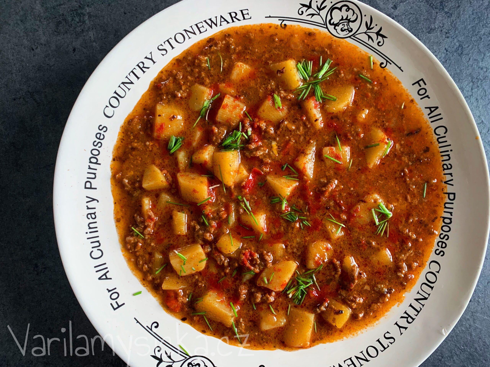

Hutná a kořeněná gulášová polévka připravená z mletého masa, cibule, brambor a papriky. Ideální na zahřátí.
Na oleji osmažíme dorůžova nadrobno nakrájenou cibuli. Přidáme mleté maso a za stálého míchání restujeme, dokud se oddělí na malé kousky.
Vmícháme mletou papriku, krátce zpěníme (nesmí se připálit, jinak zhořkne), a zalijeme vývarem nebo vodou.
Přidáme sůl, pepř a kmín. Vaříme na mírném plameni asi 30 minut.
Brambory nakrájené na kostičky a prolisovaný česnek přidáme do polévky a krátce povaříme.
Zahustíme buď suchou jíškou, jíškou z mouky a oleje, nebo moukou rozmíchanou ve vodě. Dobře provaříme, až tuk vystoupí na povrch.
Na závěr přidáme rozemnutou majoránku a polévku finálně dochutíme.